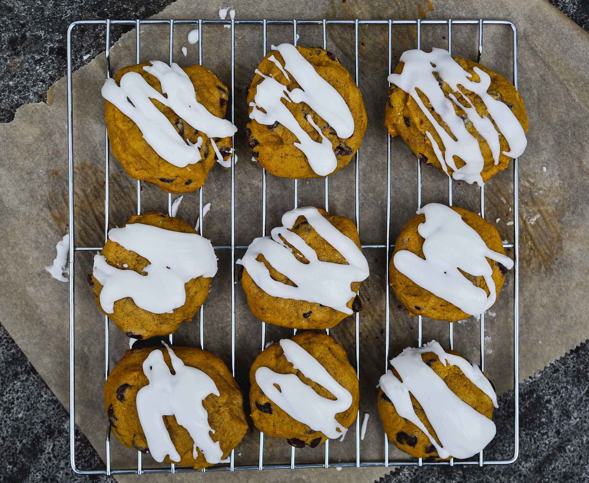

Chocolate Chip Cookies
Say goodbye to chocolate chip cookies that turn out like hockey pucks This recipe is chewy and crispy with tons of flavour. Great for an ice cream sandwich, dunking in milk or just on their own!

Ingredients
- 1 cup (2 sticks) unsalted butter, room temperature
- ¾ cup granulated sugar
- ¾ cup dark brown sugar
- 1 tsp corn syrup
- 2 eggs, room temperature
- 1 tsp vanilla extract
- 2 cups all-purpose flour
- 2 tsp Kosher salt
- ¾ tsp baking soda
- 1 8 oz semisweet chocolate bar, hand chopped
- Coarse sea salt
Preparation
- 1In a medium bowl, whisk together the flour, salt and baking powder, set aside.
- 2In the bowl of a stand mixer fitted with the paddle attachment, cream the butter and sugars together until doubled in volume and lighter in colour, 8-10 minutes. Add the eggs one at a time, mixing the first one in entirely before adding the second. Add the corn syrup and vanilla, mix until incorporated.
- 3Mix in the prepared flour mixture and chopped chocolate, mix until incorporated. Using a 1 oz scoop, scoop cookie dough onto a parchment lined baking sheet, cover with plastic wrap and chill overnight.
- 4When ready to bake, Preheat oven to 325°F. Prepare 3 rimmed cookie sheets with parchment paper. Place cookies on baking sheet at least 3” apart and sprinkle tops with a small amount of coarse sea salt. Transfer cookie sheets to oven and bake until golden brown around the edges, 12-15 minutes, rotating pans halfway through baking.
- 5Cool for 5 minutes of baking sheet and then transfer to wire rack to cool entirely. Store in an airtight container at room temperature for up to 3 days, or as long as they last!